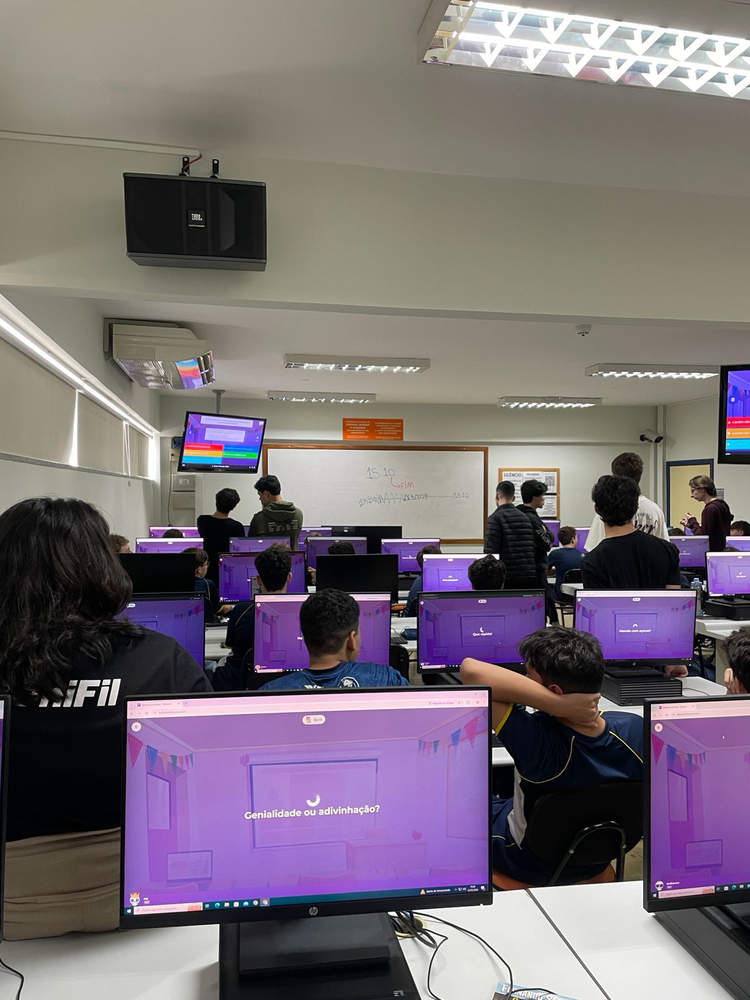

Simulado OBI
Relatório – 12ª Aula
Data: 25/05/2026
Turma: 8º e 9º ano
Instrutor: Kawan e Victor
Relatório – Simulado OBI
Na aula de hoje fizemos um simulado da OBI para os alunos do 8 e 9 ano, ja que a prova deles está próxima, o simulado tinha 20 questões e eles tiveram uma hora para terminar. Após o simulado fizemos um kahoot para complementar. no geral a aula foi bem tranquila, já que eles ficaram fazendo o simulado. Boa parte dos alunos se sairam muito bem, porém alguns acabaram com uma média muito baixa, o que me deixou preocupando, mas como esse não é o nosso conteúdo, não tem muita coisa que podemos fazer.
